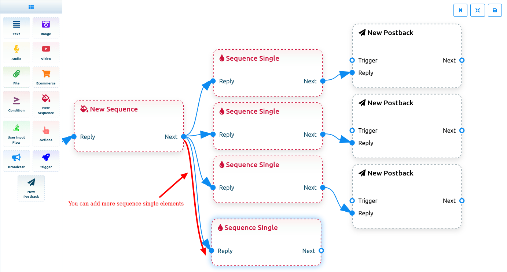

- Create account
- Connect Bot
- Build a Telegram bot
- Bot Manager
- Visual Flow Builder Editor
- Start bot flow
- Trigger Component
- Add components without dragging from doc-menu
- Clone and Delete component
- Text
- Custom variables in reply message
- Image, Audio, Video, and File Component
- Ecommerce Component
- Condition
- New Sequence
- User Input Flow
- Free keyboard Input Type Question
- Multiple Choice Question
- Action component
- Broadcast Component
Create your account in the BotSailor
Now you have to create an account with an email verified on BotSailor. After you have created an account, you automatically be logged in. And if you already have an account on BotSailor, just log in.
Connect bot
Well, after you have logged in, you will be navigated to a page called Connect Bot. Now you have to enter the Telegram bot token into the field called Telegram bot token. After entering the Telegram bot token, click on the Connect bot button.
Instantly, a successful message that the bot has been connected will appear. Also, a box will appear with the name and user name of your bot. You can deactivate the bot by turning off the radio button called active. And you can activate the bot by turning on the active button. Of course, you can disconnect the bot by clicking on the Disconnect button. Also, you can sync the bot by clicking on the sync button.
Build a Telegram bot
To build a Telegram bot, click on the bot manager option at the left side bar of the dashboard.
Bot Manager
And instantly, the Bot Manager page will appear with button called create. Well, to build a bot, click on the “Create ” button with the bot reply option selected.
Visual Flow Builder Editor
And instantly, the editor of the Flow Builder will appear. The editor is divided into two parts – doc menu and editor. On the doc menu, all the components are gathered together. And on the editor, the Start Bot Flow component is already present.
To build a bot, you have to drag components from the doc menu and drop them on the editor. Then you have to configure the components and connect them to each other. On the Doc menu, there are 13 components.
Start bot flow
On the Editor, you will see an element called start bot flow. This component is essential to building the bot. Double-click on the Start bot Flow element and the Right Sidebar called Configure Reference will appear with two fields – Title and Choose Labels. In the title field, give a title for the bot.
And in the Choose labels field, you can select a label from a drop-down menu of different predefined fields. You can select multiple labels in the Choose labels field. If you don’t have any predefined fields, you can create labels here. To create a label, put the name for a label and press Enter button on your keyboard. Instantly, a label will be created and selected. Of course, you can select a sequence in the choose sequence field, though it is optional, not mandatory. Now click on the Ok button and the information will be added to the element.
Trigger Component
The Trigger component is necessary if you want to start the bot with keywords. To set the trigger component, add the trigger component from the doc-menu and drop it on the editor. Now connect the trigger bot with the start bot flow component. Now double-click on the trigger component and a sidebar called configure trigger will appear. Now provide your comma-separated keywords in the field.
And when a user writes something in the messaging window of your bot a, if the user word or words matches the keyboard, the bot will start. Then you will see two options- Exact keyboard match and String match. By default, the exact match is selected by default. As for the exact keyword match, if the keyword matches exactly, the bot will start. Otherwise not. For example, if a keyword is an apple and the user writes the word apple exactly, the bot will start. On the other hand, as for the string match keyword, if the word user write a word that matches partially, the bot will reply. For example, if the keyword is apple and the user writes apples, the bot will start. But if the keyword is apple and the user writes ‘app’ the bot will not start.
Well, after providing comma-separated keywords and selecting an option, click on the ok button. And the keywords will appear on the component.
Now connect the Trigger Keywords component with the Start Bot Flow component.
Add components without dragging from doc-menu
You can also add components without dragging the component from the Doc-menu and dropping it on the editor. From the sockets of any component, drag the cursor and drop it on the editor.
In most cases, instantly a menu of the different components and a cancel button will appear. And from the menu, select a component and the component will appear on the editor connected with the mother component. And if you want to dismiss the drop-down menu without selecting a component, click on the Cancel Button.
For example, if you drag from the next output socket of the text component, a drop-down menu of different components — Text, Image, Video, Audio, File, Ecommerce, User Input Flow and Cancel button. Now from the drop-down menu, select your desired component. And if you want to dismiss the drop-down menu click on the Cancel button.
On the other hand, in some cases, instead of drop-down menu of different components, singe component will appear connected with the mother component.
For example, if you drage from the button output socket of the text component, and drop it on the editor, then the inline button component will appear on the editor connected with the mother component.

NB. The Inline Button component is not present in the Doc-menu.
Clone and Delete component
You can clone and delete any time component. Just click on a component and a drop-down menu of Delete and Clone will appear. Click on the clone option to clone the button and click Delete option to delete the button.
Text
If you want to build a bot with a text element, drag the Text Component and drop it on the editor. Now double-click on the component and a sidebar called Configure Text Message will appear with a text field. In the text field, you have to provide your reply message. You can include the first name, the last name of the user or the custom field variable in the reply message.
Now click on the ok button and the information will appear on the component. Then connect the text component with the Start bot flow component.
Include Custom variables in the reply message
Besides, you can include custom variables in the reply message. Click on the button called custom and a drop-down menu of different variables will appear. And from the drop-down menu, select a variable. The custom variable will be replaced by the actual value before sending it.
Image, Audio, Video, and File component:
Likewise, you can add image, audio, video, and file components. For these components, you have to upload an image, audio, video, and file respectively. Then you have to connect the components with other components.

Ecommerce
To add Ecommerce component, drag the Ecommerce component from the Doc-menu and drop it on the editor. Instantly, the Ecommerce component will appear on the editor. Now double-click on the eCommerce component and a right sidebar called configure Ecommerce with some fields will appear. First, you have to select an eCommerce store. Click on the select your Ecommerce store field and a drop-down menu of different predefined stores will appear. If you don’t have any predefined eCommerce store, first, you have to create one.
Go to the link to know how to create an eCommerce store.
After you have selected a store, you have to select products for carousel/ generic reply. Just as click on the field, a drop-down menu of different products will appear. Now select products from the drop-down menu. Of course, you can select multiple products. Then you have to write text for the buy now button.
Condition
To build a condition-based Intelligent bot, just drag the condition component from the doc-menu and drop it on the editor. Now double-click on the condition element. Instantly, a form field will appear on the left side of the editor. At the top of the form field, you will see two radio buttons-- All Match and Any Match. And you have to select All Match or Any Match. Note that if you select All Match, all the conditions have to be true to evaluate the expression. On the other hand, if you select Any Match, at least one condition has to be true to evaluate the expression. Since we will configure only one condition, you can select any of them.
Then you will see the system field and the custom field. Both the system field and the custom field contain initial fields to configure conditions. Of course, by clicking on the plus sign next to the system field and custom field, you can add more fields to configure conditions on them. Of course, you can remove the extra conditions by clicking the remove button.
Now I will set a condition to see whether the system has the email address of the user or not. If the system has the email address of a user, the bot will inform the user that the updated information will be sent to the email address. On the other hand, if the system doesn’t have the email address of a specific user, the bot will ask for the email address from the user.
Let’s set a condition to check if the system has the email address of a specific user or not and send messages accordingly:
Add condition element and connect it to the new postback element. After that, click on the condition element to configure a condition. If you configure one condition, it doesn’t matter whether you select All Match or Any Match.
Like before, select Email as the variable and Has Value as the operator. And click on the ok button. That’s all. The condition is set.
Now add two text element and connect them to the true and false sockets of the condition element. Now click on the text element connecting to the true element and write a text message to inform the user that the updated information will be emailed to the user.
Then click on the other text element connecting to the false socket and write a message to inform the user that the system doesn’t have the email address, the bot can ask for the email address with user input flow.
If the condition becomes true, the text message connecting to the True socket will be sent to the users whose email address the system alread has.
On the other hand, if the condition becomes false, the text message connecting to the False socket will be sent. Now you can connect a user input flow message to the text element connecting to the false socket. The user input flow message will ask for the email address from the users and save it to the system or custom field variable.
New Sequence
To add sequence to the bot, first, go to the flow builder editor. The start bot flow component is already on the editor. Now add the trigger component, configure it and connect it with start bot flow component. Of course, you have to configure the start bot flow component. Then add a text, image, audio, video or file component and configure. In this article, I add and configure the text component. Now you have to add a button element and connect it with text element. To do that, Drag your cursor from the buttons socket from the text element and drop on the editor. Intstantly, a inline button component will be added connected with text element.
There is an another way to add button component and connect with text element. To get inline button component, right-click on the editor and a list of different component will appear. Now select a inline button from the list and the inline button component will appear on the editor. Now connect the button element with the text element.
Now you have to configure the button element. Double click on the button element and a sidebar called configure button will appear with two fields called button text and button type field. In the button text field, provide a name for the button. Then in the button type field, you have to select a button type from the drop-down menu. To create sequence message, we need a new postback component. Therefore, select a new postback component from the drop-down menu. Now click on the okay button.
Instantly, a new postback component will appear connected with the inline button element. Now you have to configure the new postback component for the sequence. Double-click on the postback component and a sidebar called configure postback will appear with three fields called title, choose a label and choose sequence. In the title field, give a title for the postback component. And in the choose label field, select a label from the drop-down menu. In this case, you have to have a predefined label. Of course, you can create a label here. To create a label, write down the name of the label and press enter. Instantly, the label will be created and selected.
Now you have to choose a sequence. Click on the choose sequence and a drop-down menu of different predefined sequence labels will appear. But if there is no predefined sequence, you have to create a sequence. To create a sequence, select the new sequence from the drop-down menu.
Instantly, the new sequence element connected with the new postback element will appear with three sequence single element and three new postback element connected with sequence single.
Of course, you can add more sequence single elements to the new sequence element. To add more sequence single elements, drag your cursor from the next socket of the new sequence element and drop on the editor. Instantly, sequence single element will appear connected with new sequence element.
Double click on the new sequence and a sidebar called configure sequence will appear with some fields. Give a name for the sequence in the sequence name field. Under the Sequence name field, you will see some time-related fields. In the starting time field, you have to select a time from the dropdown menu of different time. Likewise, in the closing time field, you have to select a time from the dropdown menu of different time. The sequence message will be sent to the users between the starting and closing times. And in the Time Zone field, select a time zone from the drop-down menu of different time zone. Now click on the ok button and the new sequence element will be set.
Now you have to configure the each sequence single element. Double click on a single sequence element and a sidebar called Configure new postback will appear with two radio buttons – promotional 24 Hours and Non promotional Daily. If you want to send promotional message, turn on the promotional 24 Hours. Instantly, a field called hours will appear. Now you have to select a time from the drop-down field. After selecting a time, click on the ok button. And the time will appear on the sequence single component. On the other hand, if you want to send non-promotional message, you have to turn on the radio button called non-promotional daily. And instantly, a field called days will appear. Click on the field called days and a drop-down menu of time frame of days will appear. Select a time frame from the drop-down menu and click on okay. And instantly, the time frame will appear on the Sequence single element. Likewise, you have to configure the other sequence single element.
Now you have to give a title for each of the new postback elements connected with the single sequences.
Then you have to provide the final message. To provide the final message, you can add Text, Image, Audio, Video, File, Ecommerce, User Input Flow, or conditions. Just drag your cursor from the next socket of the new postback and a list of the different components will appear. From the list select a component and the component will be connected with the new postback component. After that, if you want to add more messages, you can add more components.
User Input Flow
Now come to the User Input Flow component. First, drag the User Input Flow Component and Drop one editor. Then connect it with start bot flow. Well, now you have to configure the User Input Flow. To configure it, double-click on the User Input Flow, and a sidebar called Configure User Input Flow will appear with a field called user input flow. Now you have to select a predefined User Input Flow Campaign. But if you don’t have a predefined user input flow campaign, you have to create a User Input Flow campaign. To create a user input flow campaign, select add input flow from the drop-down menu. Instantly, a field called campaign name will appear. Now you have to give a name for the campaign and then click on the ok button.
Without delay, a component called a new question connected with the user Input Flow Campaign component will appear. Now you have to configure the new question component. Now click on the new question component and a sidebar called new question will appear with two question type buttons – Free keyboard input and Multiple choice.
Free keyboard Input Type Question
First, select the set free input type question and some fields will appear. In the question field, write your question. And in the question, you can set custom variables and provide the first name and last names of users. Then you have to select reply type in the reply type field. Click on the reply type field and a drop-down menu of different fields will appear. Now select a reply type according to your question. For example, if you want an email number from your users then select Email as the reply type. You can save the answer to the custom field and system field variable. In a later question, you can use the variables by providing the variables in the question field. To save the answer in the custom field variable, you have to select a custom field variable. Just click on the custom field variable field and a drop-down menu of different fields will appear. From the drop-down menu, you have to select custom field variables. If you don’t have predefined custom fields variable, you have to create them.
To create custom fields variables, click on the add new button and two fields will appear – custom field name and reply type. In the custom field name field, give a name for the field. And in the reply type field select a reply and click on the Save button. And the custom field is created. In this way, you can create many custom fields.
Now come to the Save to system field. Now just click on the field and a drop-down menu of different system field will appear. Now you have to select a system field variable where you want to save the answer to the question. Like custom field variable, you can also the system field variable in other question.
Now come to the assign the label fields. Now click on the assigne to label fields, a drop-down menu of different labels will appear. From the drop-down menu, select a label to assign the label to the question. Of course, you can create label by writing the name of the label in the field and press Enter button on your keyboard. Instantly, the label will be created and be selected.
If you want, you can assign a messenger sequence to the question. But it is optional, not mandatory. Likewise, you can assign the user input flow to a phone or email sequence. Also, it is optional, not mandatory.
Then provide a text for the Skip button text. If a user want to skip a question, they can easily do it by clicking on the skip button.
Now click ok button. Instantly, the new question will be configured and the information you provide will be shown up.
Likewise, you can add more question. To add another question, just drag the cursor from the next button of the new question element and drop on the editor. And instantly, a new question will be appeared connected on the previous question element.
Multiple Choice Question
To set multiple choice question, turn on the multiple choice button. And additionally, two fields called option will appear. Now you have to provide the choices to the multiple choice question. And by clicking on the add more button, you can add more choices. Except this thing, everything is as same as free keyboard input question.
Action component
Now come to the action component. Add the Action component on the editor and connect it to the start flow button, connecting next to the action button socket of the start bot flow component. Now you have to configure the action button component. Double-click on the action button and a sidebar called configure action button will appear with a field called action button. Now click on the field and a drop-down menu of different fields – t.me shortlink, broadcasting, Get-started template, No match template, Unsubscribe template, Resubscribe template, Email quick reply template, Phone quick reply template, Location Quick reply template, Birthday Quick reply template, Chat with human template, Chat with robot template. And you can select any of them from the drop-down menu. Well, if you connect the action button with the start bot flow, the bot will start from the action component.
Broadcast Component
Now come to the broadcast component. Broadcast component and Action component is the same. The broadcast component is included here only to show you that you can set broadcast in the action component.
Now let’s see how to create a campaign for broadcasting message.
First, select a broadcast from the action field. Instantly some fields will appear. Now you have to fill-out the fields. Give a name for the campaign in the campaign name fields.
Then provide labels in the Include label ids. The broadcast message will be sent to the people that are included in this label. Then provide a label in the exclude label ids. The broadcast message will not be sent to the people that are included in these fields.
Then you can set the delay time in seconds.
Then you will see a radio button called Sending time. By default is turned of. If you keep the button turned off, the broadcast message will be sent instantly. On the other hand, if you want to schedule the message, turn on the radio button.
Instantly, two fields — schedule time and time zone — will appear. Now click on the schedule time field and a calender with date and time will appear. And from the calender, select the date and time you want to your broadcast message schedule on.
Then select a time zone from the Time zone field.
At the end of the form the targeted subscriber of the broadcasting message will be shown.
Now click on the and the campaign will be created.
After the time I have specified in the sequence single element, the message in the text element will be delivered to the subscribers.